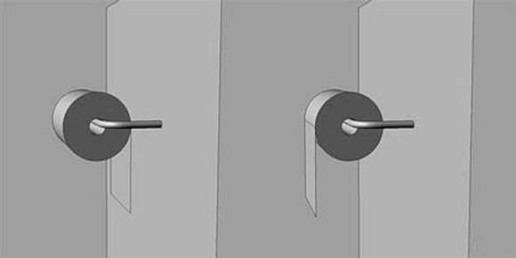

휴지계의 부먹 찍먹 논란이라 할 수 있다. 사람에 따라 선호하는 방향이 다르지만, 최초의 화장실용 두루마리 휴지 특허를 보면 발명자의 원 의도는 우측이었던 것으로 보인다. 덮개가 부착된 휴지걸이의 경우 좌측은 두루마리가 회전하면서 덮개의 날개와 역방향으로 충돌하기 때문에 우측이 선호된다. 휴지에 그림이나 무늬가 있어 겉면과 뒷면이 구분되는 경우에는 좌측은 뒷면이 노출되므로 마찬가지로 우측이 선호된다.
일반적으로 휴지말이의 끝부분이 벽 쪽을 향하게 걸면 습기로 인해 휴지가 벽에 달라붙어서 끝이 사람쪽으로 향하게 걸어두는 경우가 많지만, 개나 고양이같은 애완동물을 키우는 집에서는 이렇게 걸면 애완동물이 휴지를 잡아당길 수 있어 반대로 걸곤 한다.
